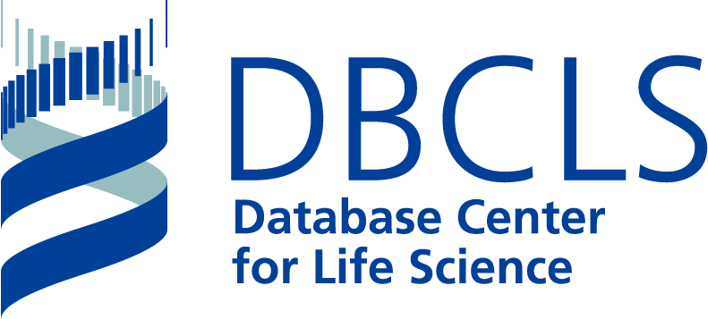

2019年ハッカソン・プレ・ミーティング
本年度も、初日に研究会合を行います。
今回のプレ・ミーティングは、過去2回の内容とは変わって、
- オミクスデータ解析の多重検定（FDR検定）
を採り上げます。
FDR (False Discovery Rate) による検定（エラー率のコントロール）は判りにくいとされることが多いですが、多くのオミクス分野ではこの処理が結果の発表に必須とされています。
そこで、
トランスクリプトーム、プロテオーム、ペプチドーム、メタボローム各分野での処理を講演で並列に提示、そこから各分野での手法の共通点や相違点について考察、 理解の助けにしよう、というのが
目標です。
なお本ページには、今後も随時情報を追加していきます。
ミーティング概要
- 会合名： 第3回・質量分析インフォマティクス・ハッカソン・プレ・ミーティング
- 開催日時： 2019年7月7日（日） 午後3時 ～ 午後6時30分
- 午後2時30分開場・午後7時閉場
- 午後2時30分開場・午後7時閉場
-
開催場所： 休暇村指宿 （ハッカソン会場）
-
参加費： 無料
- なお助成先への報告の都合上、参加人数の確認のため、当日は参加者の出欠確認を行いますのでご了承ください（不参加でもペナルティなどは（もちろん）ありません）。
- なお助成先への報告の都合上、参加人数の確認のため、当日は参加者の出欠確認を行いますのでご了承ください（不参加でもペナルティなどは（もちろん）ありません）。
- 主催： 質量分析インフォマティクス研究会 （日本バイオインフォマティクス学会 (JSBi)）
- 協賛： 公益財団法人・加藤記念バイオサイエンス振興財団
- 協力： 大学共同利用機関法人・情報・システム研究機構 データサイエンス共同利用基盤施設 ライフサイエンス統合データベースセンター(DBCLS) 

ミーティング進行表
ドレスコード： 軽装 (casual)
| 時間帯 | 担当者（敬称略） | 概要 | |
|---|---|---|---|
| 14:30 | 開場 | ||
| 14:30～ | 参加者受付 | ||
| 15:00～15:05 | 座長 | 開会挨拶、当日の予定告知 | |
| 15:05～15:45 | 坊農 秀雅 | (DBCLS) | 「トランスクリプトームデータ解析ー生物学的有意性と統計学的有意性のあいだ」（仮題） |
| 15:45～16:25 | 吉沢 明康 | (京大・薬) | 「偽客（さくら）と囮（おとり） ～計算プロテオミクスの品質保証～」（仮題） |
| 16:25～16:35 | 休憩 （10分） | ||
| 16:35～17:15 | 早川 英介 | (OIST) | 「ペプチドミクスにおけるFDR事情： プロテオミクスの呪縛からの解放」（仮題） |
| 17:15～17:55 | 津川 裕司 | (理研CSRS・IMS) | 「ノンターゲットメタボローム解析におけるFDRを用いたアノテーション法」（仮題） |
| 17:55～18:25 | 総合討論 （30分） | ||
| 18:25～18:30 | 座長 | 閉会挨拶 | |
| 19:00 | 閉場 | ||
| 19:00～21:00 | 事前申込者 |
レセプション （国内版バイオハッカソンと合同） |
|
| 21:00～ |
（自由時間） |
||
※ 講師との個別ディスカッションは、この後のレセプション及び翌日からのハッカソンの時間をご利用下さい。
講師所属先（敬称略、講演順）
坊農 秀雅 情報・システム研究機構(ROIS) データサイエンス共同利用基盤施設(DS) ライフサイエンス統合データベースセンター(DBCLS)
吉沢 明康 京都大学 大学院薬学研究科 薬科学専攻
早川 英介 沖縄科学技術大学院大学(OIST)
津川 裕司 理化学研究所 環境資源科学研究センター (CSRS)＆生命医科学研究センター (IMS)
本ミーティングの開催にあたっては、
日本バイオインフォマティクス学会(JSBi)予算及び
加藤記念バイオサイエンス振興財団からの助成 に加え、
情報・システム研究機構 データサイエンス共同利用基盤施設による公募型共同研究（共同研究集会）
ROIS-DS-JOINT(005RM2019)［申請者：吉沢明康］
を受けています。
Page Last Updated: July 1, 2019